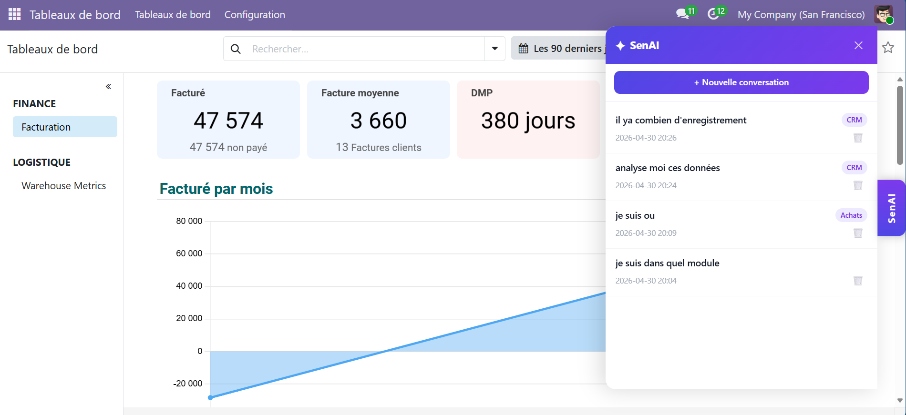
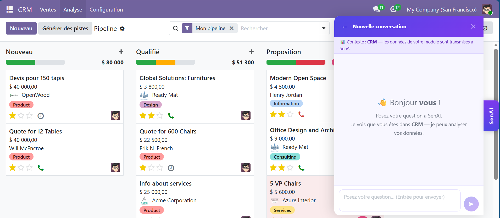
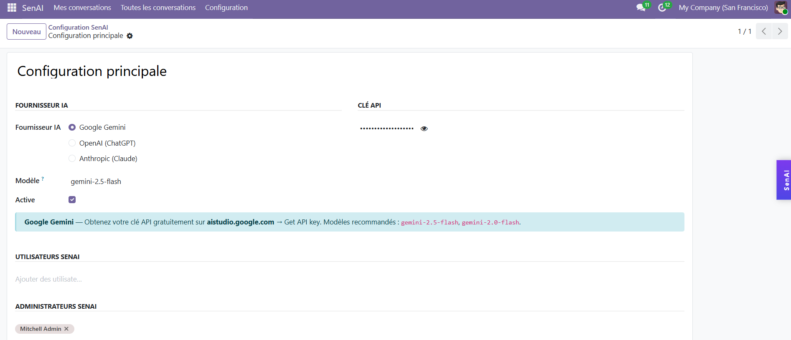
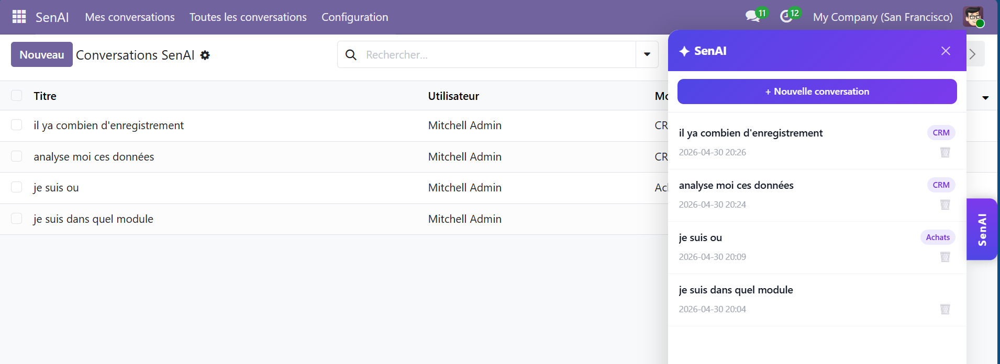

Google Gemini · OpenAI (ChatGPT) · Anthropic (Claude) — directly in Odoo 19
A fixed tab on the right edge of every Odoo page. Click to open a sleek panel — no page change required.
The assistant detects your current module (CRM, Sales, Accounting…) and automatically injects live data into every conversation.
Each user has their own private conversation history, persisted in the database and resumable at any time.
Choose your AI provider — Google Gemini, OpenAI or Anthropic Claude. Switch anytime from the configuration.
Built-in User and Admin groups. Record rules enforce personal data isolation at the ORM level.
Inherit senai.mixin in any custom module to add AI capabilities in just 3 lines of code.

The floating tab is always visible — click to open the chat panel

Contextual conversation — the assistant reads your CRM/Sales/Accounting data in real time

Choose your AI provider and paste your API key — done in 30 seconds

Personal conversation history — resume any past conversation
Free tier available
API key from aistudio.google.com
gemini-2.5-flash
gemini-2.0-flash
ChatGPT models
API key from platform.openai.com
gpt-4o
gpt-4o-mini
Claude models
API key from console.anthropic.com
claude-opus-4-7
claude-sonnet-4-6
Upload the ZIP in Odoo Apps (Settings → Activate developer mode → Apps → Upload). The module installs with zero additional dependencies.
Go to SenAI → Configuration, select your AI provider, paste your API key and save.
In the same configuration, add users to SenAI Users. The floating chat immediately appears for them on every Odoo page.
Add AI to any custom model in 3 lines — the mixin handles authentication, fallback models and error handling automatically.
| Odoo Module | Data injected into AI context |
|---|---|
| CRM | Leads by stage, expected revenue, responsible user |
| Sales | Orders by status, total amounts |
| Accounting | Customer invoices, supplier bills, payment states, totals |
| Inventory | Transfers by status |
| Purchase | Purchase orders, total amounts |
| Project | Tasks by stage |
| HR / Employees | Employees by department |
Only the data from your current Odoo module (e.g. CRM leads count, invoice totals) is sent to the AI provider you configured. No full database export, no sensitive personal data beyond what you explicitly ask about.
Both Community and Enterprise. The module only depends on base and web — no Enterprise-specific modules required.
No. All API calls use Python's built-in urllib library. Nothing to pip-install on your server.
Yes. The admin configures one API key for the whole company. All authorized users share it transparently.
Yes. Record-level security rules (ORM-level) ensure each user can only read, write and delete their own conversations. Admins can view all conversations via the back-office menu.